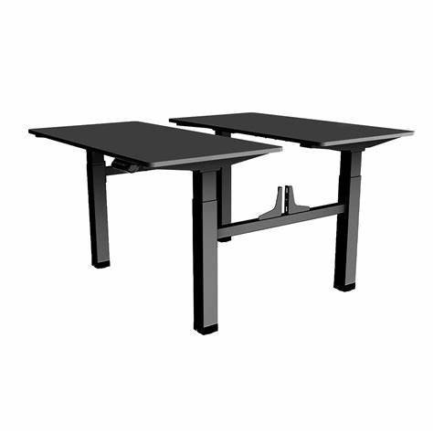
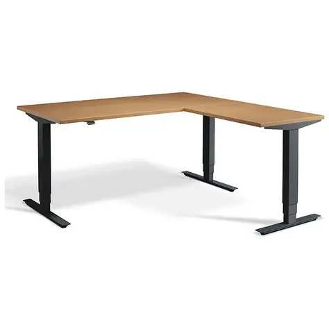
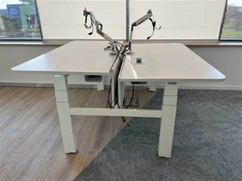
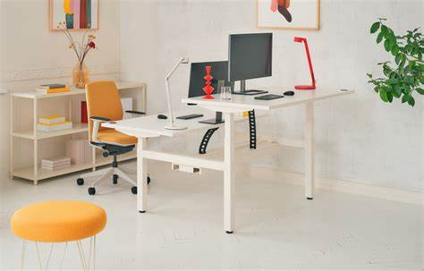

NEYRAL SPINAL GUARD...
This equipment helps to maintain the neural spine in a good position thus reducing back pains.
This equipment helps to maintain the neural spine in a good position thus reducing back pains.

Well designed to help protect the waist from unnecessary strains and injuries. Also helps to reduce lower back pains.

Elbow support system to help reduce stress on the elbow joint during extended periods of desk work. Finds application in office settings and home workstations.

Arms control and protective equipment to help reduce strain on the arms during prolonged desk work. During woek it helps to maintain proper arm posture thus reducing the risk of repetitive strain injuries.

Shoulder support system to help alleviate strain on the shoulder muscles and joints during extended periods of desk work. It promotes better posture and reduces the risk of shoulder-related discomfort and injuries.